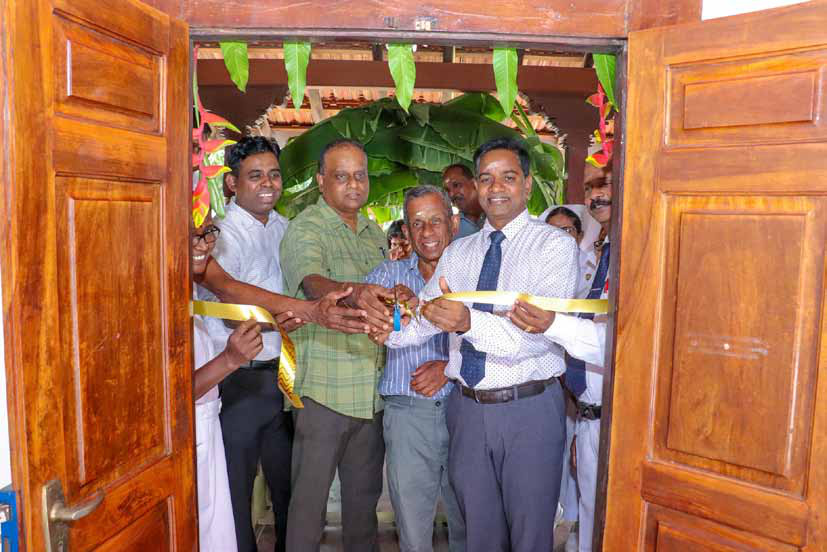
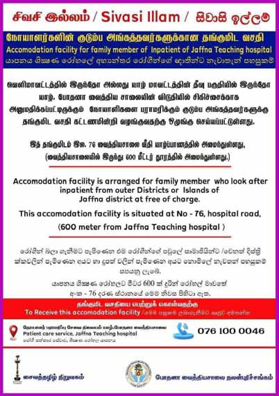
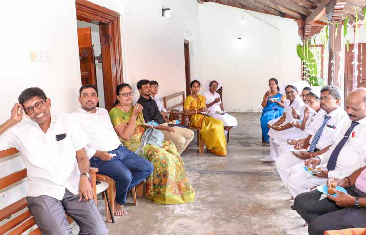

T he UK Proscribed Organisations Appeals Commission (POAC), an independent court established by Parliament and headed by a high court judge and two retired senior diplomats, has upheld the proscription of the Liberation Tigers of Tamil Eelam (LTTE). This decision rejects an appeal by the self-proclaimed Transnational Government of Tamil Eelam (TGTE) to remove the LTTE from the list of banned organizations under the Terrorism Act 2000. As a result, the LTTE remains classified as a terrorist organization in the UK.
T he UK Proscribed Organisations Appeals Commission (POAC), an independent court established by Parliament and headed by a high court judge and two retired senior diplomats, has upheld the proscription of the Liberation Tigers of Tamil Eelam (LTTE). This decision rejects an appeal by the self-proclaimed Transnational Government of Tamil Eelam (TGTE) to remove the LTTE from the list of banned organizations under the Terrorism Act 2000. As a result, the LTTE remains classified as a terrorist organization in the UK.
Jaffna Monitor hellojaffnamonitor@gmail.com 38 T he UK Proscribed Organisations Appeals Commission (POAC), an independent court established by Parliament and headed by a high court judge and two retired senior diplomats, has upheld the proscription of the Liberation Tigers of Tamil Eelam (LTTE). This decision rejects an appeal by the self-proclaimed Transnational Government of Tamil Eelam (TGTE) to remove the LTTE from the list of banned organizations under the Terrorism Act 2000. As a result, the LTTE remains classified as a terrorist organization in the UK. The LTTE was initially proscribed on March 29, 2001. The Sri Lankan civil war ended in May 2009 with the death of LTTE leader Vellupillai Prabhakaran and the defeat of its military forces. Despite this military defeat, the POAC noted that the LTTE's international network remains active. According to the Joint Terrorism Analysis Centre (JTAC), from 2012 to 2017, there were activities indicating attempts to revive the LTTE's violent operations. The TGTE, which advocates for an independent Tamil state, sought to lift the ban on the LTTE, arguing that it no longer poses a terrorist threat. However, unlike the LTTE, the TGTE is not proscribed in the LTTE Remains Banned in UK Monitor Memo UK, as it promotes its objectives through non-violent means. The TGTE's appeal was based on four key arguments: the LTTE's current incapability of posing a threat, the surprising claim that there are no reasonable grounds to believe the LTTE is involved in terrorism, errors in the Secretary of State's discretion to maintain the proscription, and the contention that continued proscription violates freedom of expression, assembly, and association. The Commission emphasized that even an organization that is currently inactive but intends to reactivate its military wing meets the criteria for proscription. JTAC's assessments confirmed that the LTTE's network has engaged in activities indicating an intent to revive the group. Incidents cited in the decision included an IED explosion by a former LTTE operative in July 2020, the arrest of individuals with a claymore mine in December 2020, and a cyber-attack on a Sri Lankan government website. While the TGTE argued that evidence from Sri Lankan sources was unreliable, the POAC upheld the decision, stating that no significant legal flaws were found in the process. The Commission also noted that de- proscription could damage UK relations with India and Sri Lanka, aligning with the UK's Indo-Pacific strategy.
Jaffna Monitor hellojaffnamonitor@gmail.com 39 J affna, Sri Lanka – For many, the journey to accompany loved ones admitted to Jaffna Teaching Hospital is fraught with challenges and exhaustion. It's a heart-wrenching sight to see numerous patients' relatives sleeping on the pavement or staying awake all night, deprived of even the most basic comforts due to the lack of proper facilities at the hospital. Recognizing these immense struggles, a group of compassionate Good Samaritans has stepped in to offer a glimmer of hope: Sivasi Illam, a newly established sanctuary providing much-needed relief and support. Recently inaugurated, Sivasi Illam serves as a haven for relatives and caregivers, providing essential facilities such as rest areas, showers, changing rooms, and sleeping quarters. This service center ensures that they can maintain their well- being while supporting their hospitalized loved ones. By addressing the critical need for proper accommodations, Sivasi Illam offers much-needed relief Sivasi Illam: A Newly Established Sanctuary for Relatives of Patients at Jaffna Teaching Hospital BY: Our Reporter

Jaffna Monitor hellojaffnamonitor@gmail.com 40 and comfort. Located at No. 76, Hospital Road near Sathira Santhi (just beyond the market), the property for Sivasi Illam was generously donated by Dr. Ratneswaran from the UK. He graciously contributed his house for this noble cause and personally attended the opening ceremony. Dr. T. Sathiyamoorthy, Director of Jaffna Hospital, stated that Sivasi Illam has been designed with care and compassion. He noted that the center features comfortable bedrooms and well-maintained bathrooms, ensuring everyone feels at home. He highlighted that this initiative, conceived by the Jaffna Teaching Hospital Welfare Society, was meticulously organized by Dr. Premakrishna, Treasurer, who led the memorable inaugural event. Dr. Sathiyamoorthy also acknowledged the generous financial support from the Saivite Tamil Foundation, USA, which has been instrumental in bringing Sivasi Illam to life. Dr. Sathiyamoorthy mentioned that Sivasi Illam officially opened its doors to the public last Monday and is already making a significant impact. He urged the community to embrace this service, use it responsibly, and spread the word to ensure that no family endures unnecessary hardship while caring for their hospitalized loved ones. When contacted, Dr. S. Premakrishna, Consultant Anesthesiologist in Jaffna and Treasurer of the Jaffna Teaching Hospital Welfare Society, shared details. He stated, "This shelter for patients' relatives is an initial step in a larger program. Currently, this house can comfortably accommodate around 12 people. The only criterion we stipulate is that these individuals should be from districts outside of Jaffna or from the Jaffna islands." Dr. Premakrishna elaborated on the necessity of this initiative, explaining, "Due to the comprehensive range of medical treatments available at Jaffna Hospital, we are seeing an influx of patients from various districts, including Kilinochchi, Mullaitivu, Vavuniya, Puttalam, Batticaloa, and even Sinhala patients from districts such as Anuradhapura, Polonnaruwa, Kandy, and many more. The relatives of these patients, who often come as bystanders and are primarily from poor backgrounds, face significant challenges in finding accommodation in Jaffna. Hotels near Jaffna Hospital charge considerably high rates, and not everyone has relatives in the area. Consequently, these individuals face severe difficulties in finding a place to stay. We are committed to helping them through this initiative."

Jaffna Monitor hellojaffnamonitor@gmail.com 41 He further explained the operational details of the facility: "This house will be managed not by the hospital but by the Jaffna Teaching Hospital Welfare Society. We have appointed two staff members to run the house. No food is provided for those who stay, but we are considering offering meals in a few months once we have a sufficient budget. For now, we will provide tea and biscuits at night for the bystanders who arrive late." Addressing future plans, Dr. Premakrishna stated, "Currently, we do not have precise data on the number of people needing accommodation. After running the facility for a few weeks, we will gather insights and plan to expand this service to other locations as needed. Based on this data, we will make informed decisions regarding the expansion." He also emphasized a critical aspect of patient care: "Many patients from other districts need to return for follow-up check-ups within a week after discharge. Unfortunately, many of them lack the means to travel back and forth. To address this issue, we are considering constructing a separate facility specifically for these patients in the future. This facility will need to be equipped with appropriate medical and nursing care services due to the specific requirements of these patients and will necessitate a higher budget. We are dedicated to addressing this need in the near future." Dr. S. Premakrishna (first from left), Consultant Anesthesiologist in Jaffna and Treasurer of the Jaffna Teaching Hospital Welfare Society, is seen at the opening ceremony of 'Sivasi Illam Reach Out for Assistance:Hospital Welfare Association: 0761000046 Sivasi Illam Coordinator: 0770054829 How to Avail the Free Service: Obtain an application form from the Patients' Welfare Association office. Complete the form with the necessary details. Submit the recommendation form to the responsible nursing staff at the hostels where the patients are admitted.
